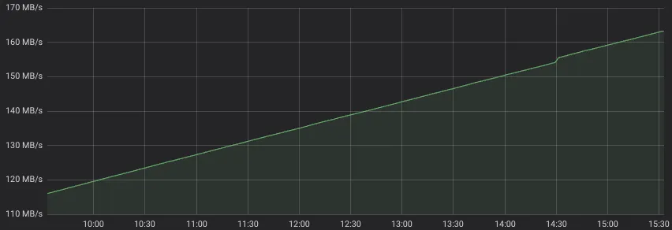
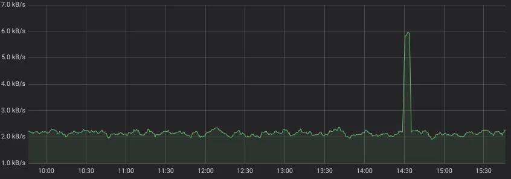
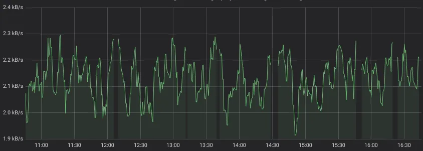
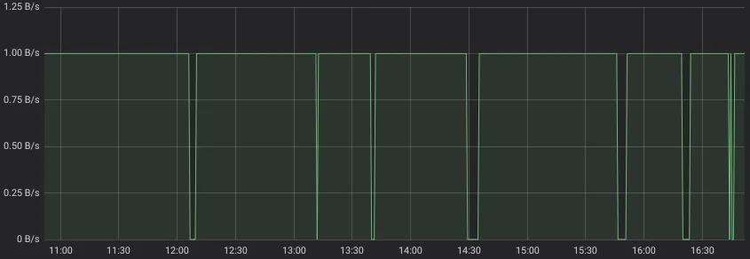

PromQL 新手入门
PromQL 是 Prometheus 系统的查询语言。它是为绘图、告警或派生 Timeseries（通过 recording rules） 场景而设计的强大且简单的语言。PromQL 是从零开始设计的，与其他在时间序列数据库中使用的查询语言（比如 TimescaleDB 的 SQL，InfluxQL 或者 Flux）没有任何共同之处。
这样做可以为典型的 TSDB 查询创建一个清晰的语言。但是它也有代价 - 初学者通常需要花费几个小时阅读官方的PromQL文档，才能理解其工作原理。让我们简化和缩短 PromQL 的学习曲线。
查询一个 Timeseries
选择使用 PromQL 查询 Timeseries 就像在查询中写入一个时间序列名称一样简单。例如，下面的查询将返回所有名称为node_network_receive_bytes_total的 timeseries：
node_network_receive_bytes_total这个名称源自于node_exporter指标，它包含了在各种网络接口上接收的字节数。这样一个简单的查询可能会返回具有相同名称但带有不同 Label Set 的多个 Timeseries。例如，上面的查询可能会返回以下 device Label 等于eth0、eth1和eth2的 Timeseries：
node_network_receive_bytes_total{device="eth0"}
node_network_receive_bytes_total{device="eth1"}
node_network_receive_bytes_total{device="eth2"}不通的Label被放在了花括号中：{device="eth0"}, {device="eth1"}, {device="eth2"}.
让我们来看下 TimescaleDB 的 SQL 来达到同样的效果：
SELECT
ts.metric_name_plus_tags,
r.timestamps,
r.values
FROM (
(SELECT
time_series_id,
array_agg(timestamp ORDER BY timestamp) AS timestamps,
array_agg(value ORDER BY timestamp) AS values
FROM
metrics
WHERE
time_series_id IN (
SELECT id FROM time_series
WHERE metric_name = 'node_network_receive_bytes_total'
)
GROUP BY
time_series_id
)
) AS r JOIN time_series AS ts ON (r.time_series_id = ts.id)对比下来是不是觉得很简单。SQL 不得不写得更加复杂，才能与上述的PromQL查询结果相媲美。因为 SQL 不会自带时间范围和降采样机制，但这些都会被 PromQL 的 /query_range 接口 使用start，end和step参数自动完成。
使用Label过滤
一个指标名称可能返回多个具有不同 Label Set 的 timeseries，就像上面的例子一样。如何选择只匹配{device="eth1"}的 timeseries？只需在查询中提及所需的 Label 即可：
node_network_receive_bytes_total{device="eth1"}如果你想要查询除了 eth1 的所有 timeseries，只需要把语句里的=换成!=就可以：
node_network_receive_bytes_total{device!="eth1"}如何选择device以 eth 开头的所有 timeseries 呢？只需要使用正则表达式：
node_network_receive_bytes_total{device=~"eth.+"}这个正则过滤器支持 Go 语言（RE2）支持的所有写法。
要查询所有device不以 eth 开头的 timeseries，则只需要把 =~ 替换为 !~：
node_network_receive_bytes_total{device!~"eth.+"}使用多个Label过滤
Label 过滤器可以被联合使用。举个例子：下面的查询语句只会返回node42:9100实例中device以eth开头的 timeseries。
node_network_receive_bytes_total{instance="node42:9100", device=~"eth.+"}这些 Label 过滤器之间是与运算关系。意思是『返回即匹配这个过滤器，又匹配那个过滤器的数据』。
那如果实现或运算逻辑呢？当前的 PromQL 是不支持或运算的，但大多数场景是可以通过正则表达式来解决的。举个例子，下面的查询语句就会返回 device 是 eth1 或 lo 的 timeseries。
node_network_receive_bytes_total{device=~"eth1|lo"}对 Metric 名称使用正则过滤
有时我们可能需要同时返回多个监控指标。Metric 名称本质上也是一个普通的 Label 的值，其 Label 名是__name__。所以可以通过对 Metric 名使用正则的方式，来过滤出多个指标名的数据。举个例子，下面的查询语句会返回 node_network_receive_bytes_total 和node_network_transmit_bytes_total两个指标的 timeseries 数据：
{__name__=~"node_network_(receive|transmit)_bytes_total"}对比最新数据和历史数据
PromQL 支持查询历史数据，并将它与当前最新数据进行合并或对比。只需要给查询语句增加一个 offset。举个例子，下面的查询语句会返回一周前名字是node_network_receive_bytes_total的所有 timeseries：
node_network_receive_bytes_total offset 7dThe following query would return points where the current GC overhead exceeds hour-old GC overhead by 1.5x.
下面的查询将返回当前GC开销超过一小时前GC开销1.5倍的数据点。
go_memstats_gc_cpu_fraction > 1.5 * (go_memstats_gc_cpu_fraction offset 1h)运算符 > 和 * 在下面会有介绍。
计算速率
细心的读者会注意到上面的查询语句在 Grafana 上绘制的线条都是下面这样递增的样式：

这样的图表实用性几乎为零，因为它们显示的是难以解释的不断增长的Counter值，而我们想要的是网络带宽图表 —— 在图表左侧看到MB/s。PromQL有一个神奇的函数可以实现这个功能 —— rate()。它可以计算所有匹配时间序列的每秒速率：
rate(node_network_receive_bytes_total[5m])这样监控图就变正确了：

查询语句中的 [5m] 是什么意思呢？这是一个代表 5m（5分钟）时间区间。在这个场景中，在计算每个时间点的每秒平均增长率时， 会往回看5m的数据，即最近5分钟的每秒平均增长。每个数据点的计算公式可以简化为(Vcurr-Vprev)/(Tcurr-Tprev)，Vcurr 代表当前时间Tcurr上的数值，Vprev 代表在时间Tprev 上的数值，其中Tprev=Tcurr-5m。
如果这看起来太复杂，那么就记住，这个时间区间越大，监控图就会约平滑；而更小的时间区间会让监控图变得更加跳跃（抖动）。VictoriaMetrics 对 PromQL 进行了扩展，这个时间区间[d]可以省略不写，缺省情况下就是2个数据点之间的间隔（通过step参数指定的），而step的默认缺省值是5m。
rate(node_network_receive_bytes_total)速率(rate)的缺陷
Rate 删除度量名称，同时保留内部时间序列的所有 Label。
不要对可能上下波动的时间序列使用 Rate。此类时间序列称为 Gauge。Rate 只能应用于 Counter，Counter 总是上升的，但有时可能会重置为零（例如，服务重启时）。
不要用irate代替rate，因为它不能捕捉尖峰，而且查询速度也比rate快不了多少。
算术运算
PromQL 支持所有基础的算术运算
- 加法 (+)
- 减法 (-)
- 乘法 (*)
- 除法 (/)
- 取模 (%)
- 指数 (^)
这样就可以进行各种数据转换。比如，将bytes/s转换成bits/s：
rate(node_network_receive_bytes_total[5m]) * 8此外，也可以进行跨指标运算。例如，该文中巨大的 Flux 查询就可以简单地用下面的 PromQL 语句表达：
co2 * (((temp_c + 273.15) * 1013.25) / (pressure * 298.15))将多个时间序列与算术运算结合起来需要了解匹配规则。否则查询可能会导致数据中断或不正确的结果。匹配规则的基础很简单：
- PromQL 引擎从算术运算左侧和右侧的所有时间序列中剥离指标名称（Metric Name），但不触及标签（Label）
- 对于左侧的每个时间序列，PromQL 引擎搜索右侧具有相同标签集（Label Set）的相应时间序列，对每个数据点应用运算操作，并返回具有相同标签集（Label Set）的运算结果。如果没有找到匹配的标签集合（Label Set），则时间序列会被从结果中忽略丢弃。
匹配规则可以通过 ignoring,on,group_left和group_right修饰符进行增强。不过其逻辑非常复杂，大多数场景都不需要使用。
比较运算
PromQL 支持下面几种比较运算：
- 等于 (==)
- 不等于 (!=)
- 大于 (>)
- 大于等于 (>=)
- 小于 (<)
- 小于等于 (<=)
这些运算符可以像算术运算符一样应用于任意 PromQL 表达式。 比较操作的结果是具有唯一匹配数据点的时间序列。 例如，以下查询将仅返回小于 2300 字节/秒的带宽
rate(node_network_receive_bytes_total[5m]) < 2300其结果如下图所示，图中会出现带宽超过 2300 字节/秒的间隙：

比较运算符的结果可以使用 bool 修饰符进行修改：
rate(node_network_receive_bytes_total[5m]) < bool 2300在这个例子中，对于有数据的部分会被转化为true（1），没有数据的转换成false（0）：

分组聚合函数
PromQL 支持对时间序列进行分组聚合。时间序列按给定的标签集（Labels）进行分组，然后将给定的聚合函数应用于每个组。 例如，以下查询将返回按实例分组的所有网络接口的入口流量总和：
sum(rate(node_network_receive_bytes_total[5m])) by (instance)使用 Gauge
Gauge 是随时可能上下波动的时间序列。 例如，内存使用情况、温度或压力。 绘制仪表图表时，预计会看到图表上每个点的最小值、最大值、平均值和/或分位数值。PromQL 支持使用下面的函数完成这些：
比如，以下查询将在图表上绘制每个时间序列的可用内存的最小值：
min_over_time(node_memory_MemFree_bytes[5m])VictoriaMetrics 为 PromQL 增添了 rollup_* 函数，当处理 Gauge 时，它会自动返回 min, max 和 avg 值，例如:
rollup(node_memory_MemFree_bytes)操纵Label
PromQL 提供了 2 个函数用于 Label 修改，丰富、删除或创建：
尽管这些函数使用起来很困难，但它们允许对所选时间序列上的标签进行强大的动态操作。 label_ 函数的主要用例是将标签转换为所需的值。
VictoriaMetrics 提供了更丰富的而方便的 Label 改写方法了扩展了这方面的能力。
- label_set — 为时间序列额外增加 Label
- label_del — 从时间序列中删除指定的 Label
- label_keep — 从时间序列中保留指定的 Label，而删除其他所有 Label
- label_copy — 把某个 Label Values 复制成其他 Label
- label_move— 重命名 Label Name
- label_transform — 将所有匹配了正则表达式的子串，替换到模板中。
- label_value — 将规定 Label 的 Value 转换为数字，作为 Value 返回。
一个查询返回多个结果
有时候我们需要使用一个 PromQl 语句查询多个时间序列结果。可以使用 or 操作符。比如，下面的语句将会返回名为 metric1、metric2 和 metric3 的时序数据结果：
metric1 or metric2 or metric3VictoriaMetrics 简化了语句的写法，只需要把这些指标用括号（）包围起来：
(metric1, metric2, metric3)请注意，这里可以放置任何 PromQL 语句，而不仅仅只是指标名称。
使用组合表达式 or 时候时，经常会掉进一个陷阱：具有重复标签集（Label Set）的数据结果将被跳过。 例如，以下查询将跳过 sum(b)，因为 sum(a) 和 sum(b) 具有相同的标签集（它们根本没有标签）：
sum(a) or sum(b)总结
PromQL 是一种简单但功能强大的时间序列数据库查询语言。 它允许以简洁而清晰的方式编写典型的 TSDB 查询，特别是与 SQL、InfluxQL 或 Flux 进行比较时。 虽然它可能不支持一些查询，而这些场景是由强大的 SQL 查询支持的，但这些场景在实践中非常罕见，以至于我现在至少记不起一个。 如果您知道此类情况，请在评论中提及。
本文并没有提及 PromQL 中所有的功能，因为本文仅针对初学者：
- 本文没有提及很多函数和逻辑运算符 。
- 本文没有包含子查询内容。
- 本文没有包含查询模板(通过
CTEor WITH templates), 它可以大大简化复杂的 PromQL 语句。 - 本味没有提及很多 VictoriaMetrics 所支持的 MetricsQL 诸多有用特性。
我建议可以通过这个备忘单来学习 PromQL。